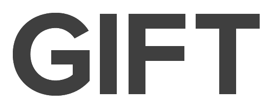

Simple Questions
Time to make you rething your current verbiage!

How do you say these words?:
- Gift
- Gab
- Gad
- Gag
- Gam
- Gas
- Get
- Gill
- Gimp
- Gird
- Girl
- Git
- Give
- Go
- Goal
- Gob
- God
- Gore
- Got
- Guide
- Guild
- Guilt
- Gull
- Gulp
- Gum
- Gun
- Gust
- Gut
- Guy
Hopfully this gets through to you. One-syllable words that start with G have a hard G.
Furthermore, “gift” is the closest word to GIF, and it has a hard G. To pronounce GIF, just say “gift” without the “t”.
What does GIF stand for?
GIF is an acronym for "Graphic Interchange Format". In your head you just said "Graphic" and not "Japhic"...
Enough said.
What do you call this brand
Even Jif peanut butter has gotten involved! Stating there is only one Jif.

Words are spelled differently for a reason you cannot deny that!